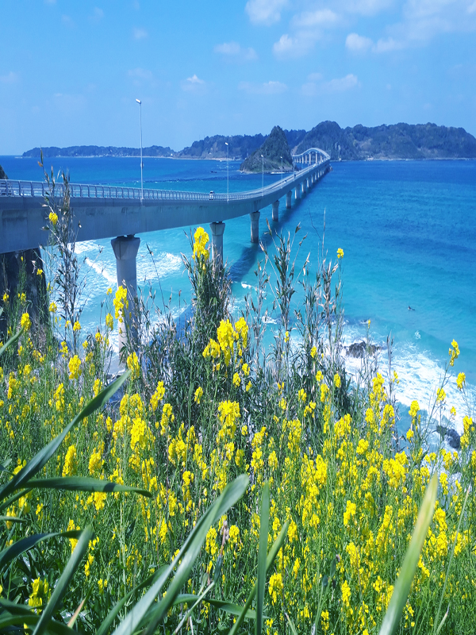
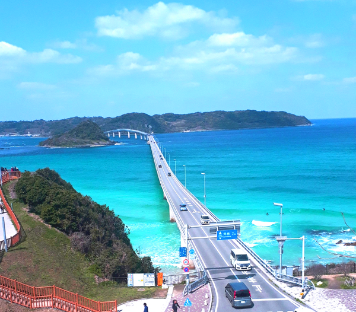

top
profile
blog
contact
山口旅行

3年前、妻と山口県へ旅行へ。上の画像はCM等でも有名な角島大橋です。
コロナ禍前で人も多く、マスク無しで人とすれ違っていた頃が懐かしいです。

そして元乃隅神社へ
100メートル以上にわたって100以上の鳥居が並ぶ様は圧巻でこちらも人が多く駐車場も何十分も待ちました。
賽銭箱が大きな鳥居の上にあって4,5回チャレンジしてようやく入れられました。

 そして元乃隅神社へ
そして元乃隅神社へ